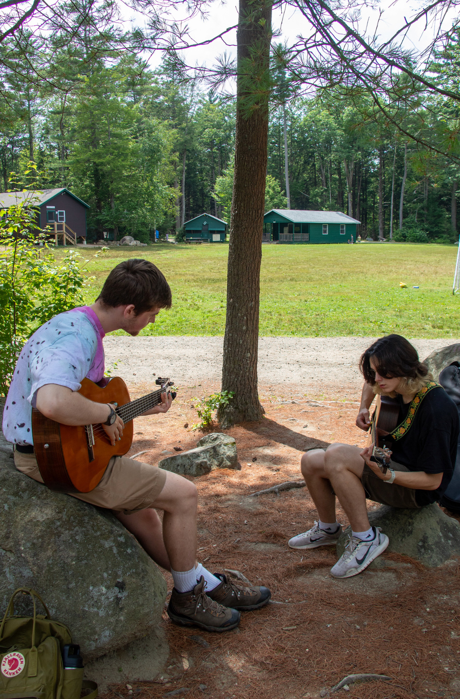

Hi, I'm Ben, it's nice to meet you.
I enjoy creating unique programs with real world applications. Explore a few projects below.
Explore by area
Click a topic to jump to its section and read more.
About
I'm a college student focused on the intersection of Computer Science and Linguistics. My interests include activism for underserved causes and communities, training and harnessing LLMs for social good, and building ethical AI systems that bridge cultural and linguistic divides.
Recent Projects
- Loading projects…
Leadership
Leading student organizations and initiatives taught me communication, project design, and the importance of mentorship. Below are highlights and roles I've held.
- President, Student Council — organized campus-wide events and fundraising.
- Mentor, Coding Club — guided peers through project-based learning.
- Initiatives: Diversity & Inclusion workshops and outreach.
(Replace this sample text with your narrative. Add links, dates, or accomplishments.)


Music
Music has been a creative home: performances, collaborations, and recordings. I enjoy blending technical precision with expressive interpretation.
- Solo & ensemble performances across campus and community venues.
- Audio recording and production fundamentals.
- Collaborations with student composers and interdisciplinary projects.
(Update with your specific instruments, recordings, and highlights.)




Performance
Performance stretches technical skill and stage presence — a place to practice resilience and craft.
- Repertoire across genres and ensemble sizes.
- Collaborative projects with multi-disciplinary teams.
- Workshops and masterclasses attended.
(Add venues, dates, and notable performances here.)


Service
Service work connects ideas to impact. I focus on community-driven projects and volunteering that scales help to those who need it most.
- Community outreach and volunteer coordination.
- Project-based service learning initiatives.
- Advocacy and support for underserved groups.
(Describe organizations, roles, and outcomes here.)


Contact
If you'd like to work together or ask a question, reach out at bmzifcak@udel.edu.